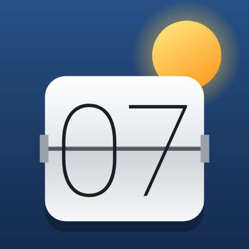
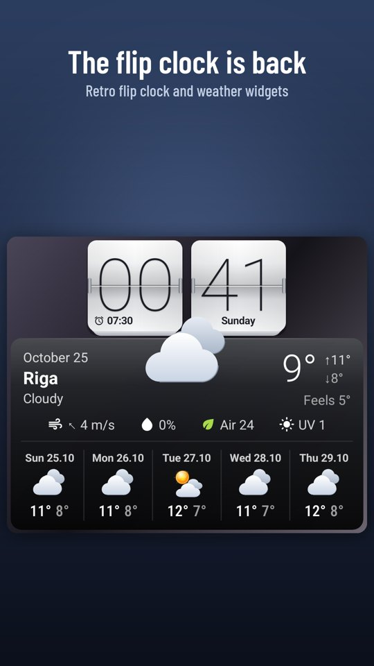
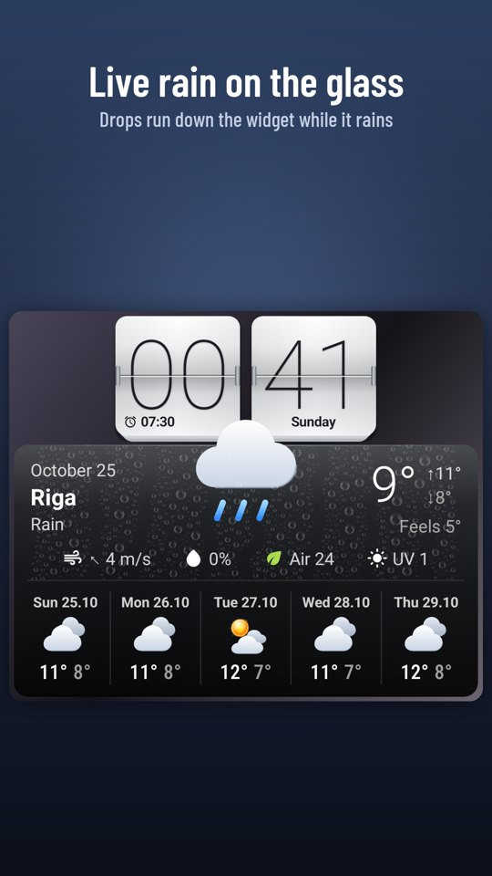
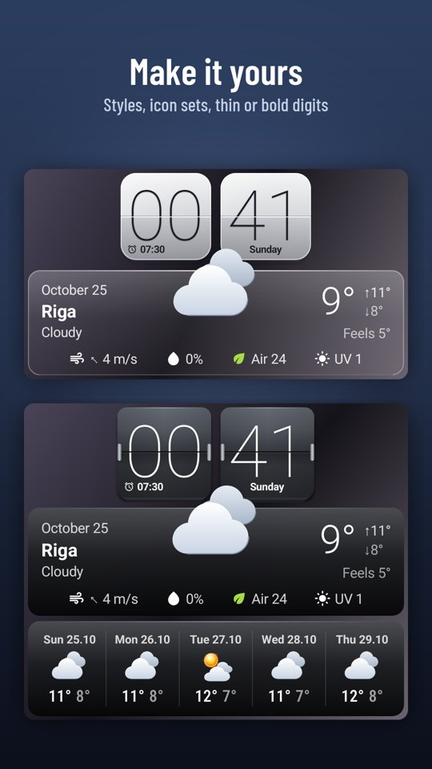
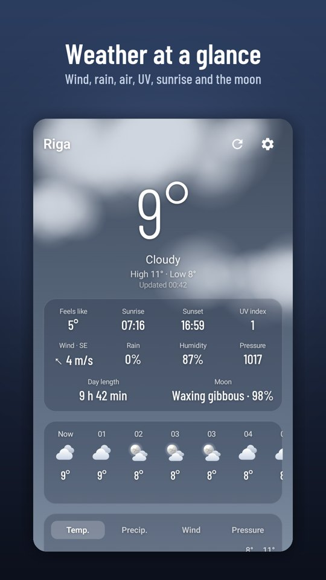
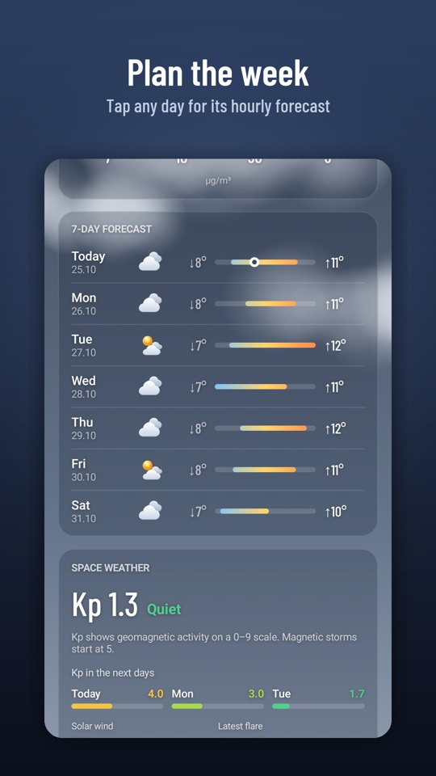
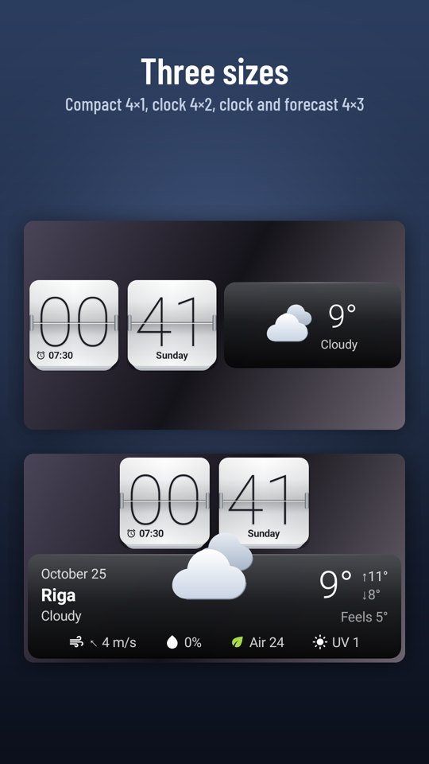

Android · No ads, ever
FlipSky
The flip clock is back. Cards that really flip, weather that moves with the sky over your own town, rain running down the widget, and the sun and the moon where they are right now.
- Flip clock
- Live weather
- Sun & Moon
- Dozens of styles
- 15 languages





⏱
Cards that really flip
Every minute the card folds over, with a shadow and a hinge, thin or bold digits, the next alarm and the weekday on the cards.
☂
Weather that lives
Rain runs down the glass while it rains, snow falls, fog drifts, the sun glints, and dawn and dusk glow on the widget.
☾
The real sky
Tonight's real moon phase, the sun's path over your day, sunrise, sunset and how much longer the day got.
Screens
A closer look
Swipe →

Widgets
- Flip clock and weather, the classic 4×2
- Clock, weather and forecast, with the sun's line over the day
- Compact flip clock, one row
- 5-day forecast on its own
- Any town for any widget: home on one, a trip on another
Weather
- Feels like, wind and its direction, chance of rain, air quality, UV
- Hour by hour charts, 7 days ahead, any day in detail
- Sunrise, sunset, day length and the moon
- Northern lights alerts when they can be seen from where you are
Styles
- Flip — classic cards, retro, glass
- Neon and glow — tubes lit in the dark
- Instruments — screens, nixie tubes, pagers, e-paper
- Boards — a station board, a platform, a bus stop, a spaceport
- Materials — marble, leather, malachite, onyx
- Sea and Depths — water, reefs, caves
- Space — orbits, nebulae, Saturn and Mars
- …and a few you'll have to find yourself
Live wallpapers
- A pond under today's sky, with visitors now and then
- Shimmer, and classic screensaver scenes
- With Premium they follow the weather
Premium
- FlipSky is complete for free
- One purchase, no subscription: the premium styles and icon sets, snow, sun glint, fog and lightning on the widget, dawn and dusk glow, space weather